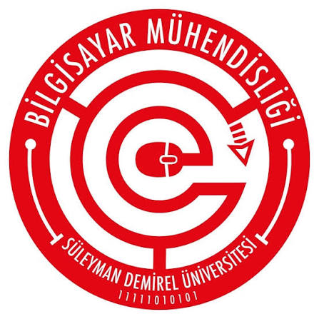

Kariyer Günleri 2026

- Tarih
- Yer
- A Blok Konferans Salonu
- Kategori
- Seminer
- Kontenjan
- 120 kişi
Etkinlik Hakkında
Kariyer Günleri 2026'da öğrenciler ve mezunlar farklı meslek alanlarından konuşmacılarla buluşacak. Oturumlarda kariyer planlama, iş başvurusu ve sektördeki fırsatlar ele alınacak; katılımcılar konuşmacılara sorularını yöneltebilecek.